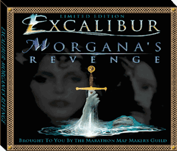

Excalibur:
Morgana's Revenge v3.0
An ExcaliburWorld
Production

by the Marathon Map Makers Guild
It was a time of peace and prosperity for mankind, before the space pirates of
El Diablo began the raids of 2270. Laying ruin to space resorts, destroying outposts,
capturing starships and viciously raging war on entire planets, the pirates showed
no mercy. Earth's high-tech Marine defense force were decimated by the onslaught
of these alien warriors. The forces of the pirates seemed unstoppable, and mankind's
very survival hung in the balance. At the helm of El Diablo were the fiercest of
the alien forces. Adorned in blue garments and wicked by nature, these pirate leaders
were soon given the nickname of Devil in a Blue Dress.
Then stepped in one super marine to infiltrate the pirate attacks. Rescuing resorts
and outposts, winning battles against unthinkable odds, solving mind boggling puzzles,
and conquering the pirate home world, one brave marine managed to save the galaxy
from a most horrible demise and end the reign of the Devil in a Blue Dress. For a
time, it seemed that this bloody interruption of human civilization had come to a
close.
But wait! What's this? Discovered on the pirate home world during the cleanup mission
are artifacts of unknown origin, strange devices and eerie potions that leave many
questions unanswered. No one seemed to understand what these discoveries meant ...
no one except the artificial intelligence known as Merlin. As Merlin unravels the
mysteries and reveals surprising information about his own existence, our brave marine
begins to realize that the real battle has not yet begun.
From the bowels of evil rises the most powerful foe to challenge you yet: the cunningly
malevolent sorceress Morgana. Rising to power during the period of Camelot, she discovers
a means to travel through time. Conjuring the darkness out of most every creature
she encounters, she begins to build empires on her trek through time. Morgana has
a diabolical plan and you may be the only chance we have to stop her!
You will begin your journey in the sickbay of the Federation starship called Kronos,
an advanced exploration craft conducting experimentation with new time travel technology.
Once reunited with Merlin, you will learn more about the adventures to follow, and
the forces which you must overcome.
Welcome
to Excalibur: Morgana's Revenge!
New Engine:
EMR 3.0 is based upon the AlephOne
engine. AlephOne is an open source project that started from the Marathon 2 source
code, but has been enhanced to bring new features to the Marathon gaming world. The
engine now supports fog, hi-res replacement textures, music tracks, and MML and Lua
scripting. AlephOne runs on Mac OS X, Mac OS 9, Windows and Linux.
What's New in EMR 3.0:
EMR Infinity (2.0) took
3 years to produce, and was vastly different than the original EMR M1 (1.0) version.
After a 4 year hiatus, the MMMG decided to start work on EMR 3.0. This effort took
another 3 years of work, including learning the MML and Lua scripting languages.
In early 2007, EMR 3.0 is released with an amazing set of new features:
- Levels with fog and mist
- Persistent effects such as poison,
earthquakes, fire storm spell, and timed grenades
- Original MP3 music
- 12 unique weapons, all hi-res,
including a new Dragon Flamer and T9000 Railgun
- New spells for your wand, including
Fire Storm, Teleportation, and Raise the Dead
- Beautifully rendered OpenGL hi-res
textures and landscapes
- New hi-res sprites for Morgana,
Trex, Piranha, Raven and more
- New hi-res scenery items such
as Kronos equipment, Street Lights, Pine Cones, Fruit, Plants & Trees, and much
much more
- Lots of updated maps with new
areas, new tasks, new features, and new secrets
- Levels that introduce the mystical
land of Avalon
- A total of 5 brand new solo maps,
giving you a total of 41 intriguing single player levels
- A new future level that let's
you pilot a Hoverbike
- New powerups, such as apples,
bananas, health kits, emergency kits, and finally a use for all those magic scrolls!
- Interractive holodeck programs
that now keep score
- Blood Gulch (Halo) style net map
with 8 simulated net players and a huge battlefield
- Introducing new ghosts that walk
through walls and ghouls that rise from the dead
- An ice rink net map where players
slip and slide while trying to snipe at others
- A basketball court netmap where
grenades in a basket win points for your team
- And much, much, more...
EMR Highlights:
- Hunt through the jungles of the
Jurassic period, travel through the heart of a volcanoe, and visit the cave dwellings
of the Grogs.
- Combat the powerful T-rex, or
take on the major raptor, the fastest foe ever to emerge from the Marathon engine.
- Gain access to the castles of
Camelot, Davenport, and more!
- Use Excalibur to take on the Black
Knights, Evil Archers and Rogue Sorcerors.
- Unfold the riddles of the enchanted
forest, and use Merlin's magic to overcome the odds.
- Space travel aboard Kronos while
attempting to fight back Morgana's invading forces.
- Explore where Morgana came from,
and experience the power of her magical beasts.
- Travel through time gates and
future pods to exploit the space time continuum.
- Come face to face with Morgana's
son, Mordred, as you fight for the holy grail.
- Chase Morgana back into the future,
and discover the wrath of GATs and SPAMs.
- Help Merlin on some personal business
of his own.
- Fight your way through underground
sewage systems while avoiding the dreaded Spewie.
- Infiltrate Morgana's stronghold
in the Forraje empire, break her security system, and invade her spaceship.
- Confront Morgana and her master
wizard, Mauvair, in a final cityscape showdown.
Available on CD:
EMR Infinity is provided as a free download over the internet. However, given
the large size of this package, we have also created a CD version. The CD version
costs only $14.95 with free Priority shipping to any US address ($21.95 for shipping
to non-US countries).
Click
here to order a CD
Release History:
1/10/07, version 3.0
- New and improved sounds
- Added Flintstone mobile
- More improved weapons graphics
- More improved scenery items
- New hi-res Raven
- Animated powerups
- Added threat indicators to extermination levels
- Landscapes renovated
- Additional updates and enhancements to maps
- New Visions of Bedrock level (pilot a Flintstone mobile)
- Fixed over 150
bugs reported by beta testers
- Implemented over 120
enhancements requested
by beta testers
8/17/06, version 3.0b8
- Global Lua and MML code
- Adjusted weapon physics
- Increases O2 depletion under media and automatic restoration above media
- Enhanced doors and door sounds
- Additional new textures
- New Morgana, Piranha, Chair, and Net Bob sprites
- New scenery items
- Improved weapon graphics and masks
- New axe, light saber, railgun and flamer
- Improved spear behavior
- New phaser behavior
- Added bananas to Jurassic levels for partial health
- New chapter screens
- New and improved music tracks
- Improved 133 sounds, replaced 48 sounds, and added many new sounds
- Updated all sounds to 16-bit sounds
- Crosshairs automatically toggled on/off for phaser
- New sleep chambers
- Added new player sprite sequences for flamer and railgun
- GATs no longer immune to fire, but now are immune to each other's bullets/grenades
- New Tiny AI module
- Removed cheat levels (use level jump and cheat codes instead)
- Updated Globetrotter to Full Court Duress (displays basket scores)
- Replaced Ballpark with Berlin II
- Replace Jurassic Winter with Mordred's Gulch
- Lots of new wand spells
- New Credits screens
- Add apples for health in Axe Camelot levels
- New emergency potions in camelot levels that auto-activate
- Animated textures
- New EMR icons
- Improved and enhanced several maps
- New level Like a GAT Out of Hell
- New terms and actions if player saves Tiny
- New holodeck programs
- New story character Gabriel
- New final task requires a return to Avalon
2/9/05, version 3.0b7
- New application icon
- Supports Fog
- New and improved textures
- Shadow sorcerers now translucent instead of gray
- Cheat codes now supported
- Fixed opacity on liquids
- Updated scenery items
- Added new Avalon map "World of Hazelle"
- Added new Starbase Merlin map "Where Did All My Weapons Go?"
- Implemented dual landscapes
- Enhanced several maps
1/31/05, version 2.1
- includes complete EMR application (no longer requires Marathon Infinity)
5/14/00, version 2.0.4
5/8/00, version 2.0.3
5/3/00, version 2.0.2
4/20/00, version 2.0.1
4/18/00, version 2.0
3/20/97, version 1.0
Legal stuff:
ExcaliburWorld Software retains all legal and creative rights to Excalibur: Morgana's
Revenge on all platforms. None of the original artwork, sounds, music, story, physics
or map designs may be distributed in any form without the written permission of ExcaliburWorld
Software.
If you wish to distribute EMR Infinity on a CD-ROM, contact support on the web at
http://excaliburworld.com/support.html. We encourage the distribution of this
scenario to all internet sites. If you know of any newsgroups or forums which you
believe would benefit from the news of this scenario, please feel free to post information
on it.